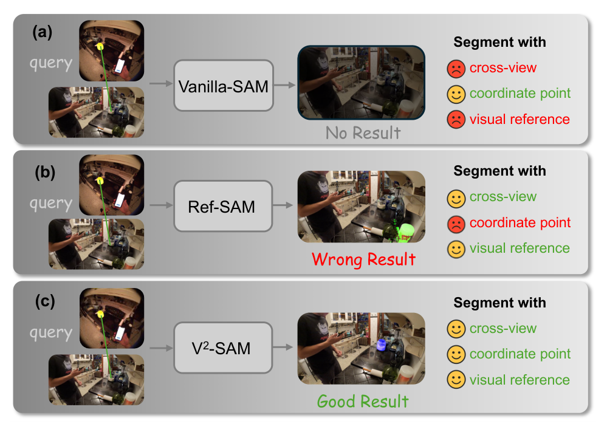
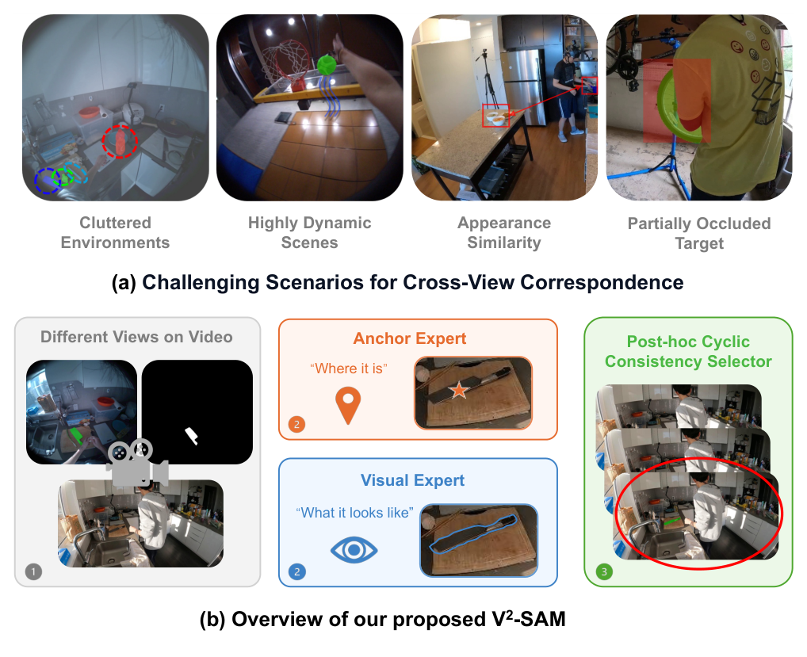
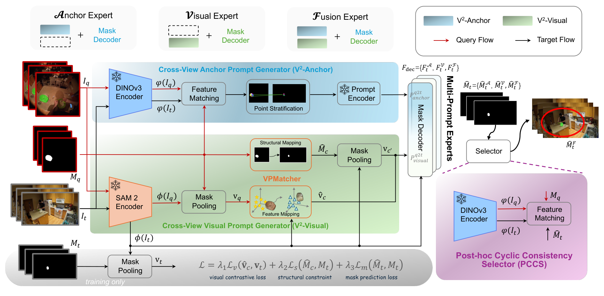
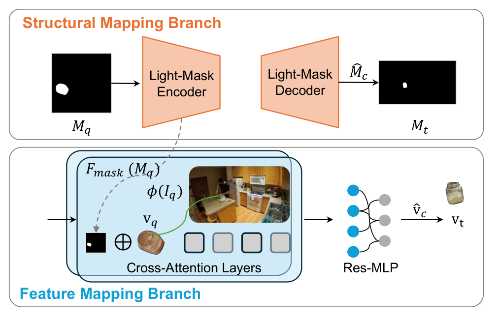
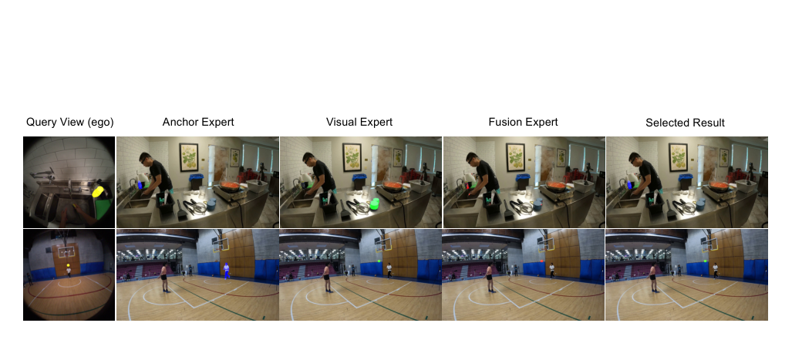
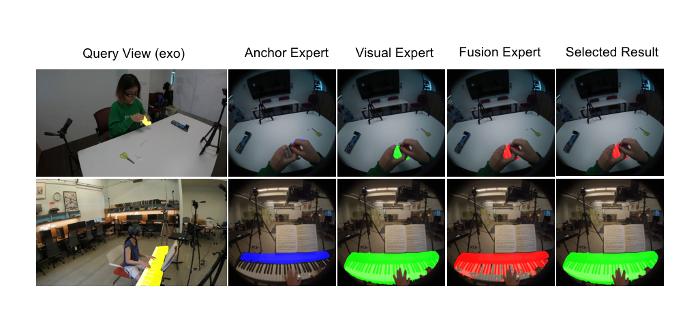
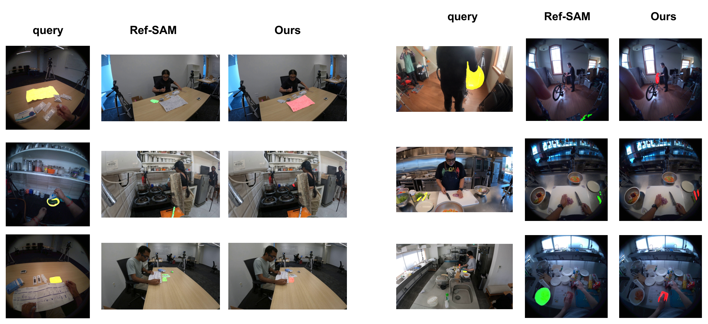
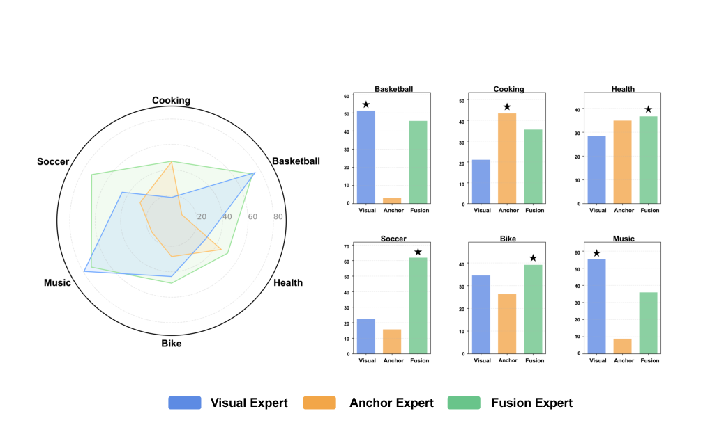

首页 > CVPR 2026 > Object Tracking / Correspondence > V²-SAM
12 Jun
V²-SAM 深读：SAM2 要"目标视角里的坐标"才能分割，可跨视角里那个坐标恰好是未知量——怎么把它从查询视角"造"出来？ Paper2Html 2026-06-12 CVPR 2026 Highlight · Top Paper (candidate) · INSAIT / 清华 / 复旦 / 华东师大 来源：arXiv:2511.20886 v2 PDF + 正文/补充材料
Top Paper candidate Cross-View Correspondence SAM2 / DINOv3 Ego–Exo4D Multi-Prompt Experts Cyclic Consistency MathJax checked
导读。 SAM2 是当下最强的可提示分割基座，但它有一条硬约束：它的解码器要靠"目标图像坐标系里的"空间提示 （点 / 框 / 掩码坐标）才能被条件化。把它搬到跨视角物体对应 （cross-view object correspondence）——给定查询视角 ego（第一人称）里某物体的掩码，要在目标视角 exo（第三人称）里把同一个物理物体 抠出来——它立刻翻车：目标视角里这个物体的位置、尺度、形状、外观几乎全变了 ，于是"目标视角里的坐标"恰恰成了你要找的未知量。前人方案 Ref-SAM 走了另一条路：干脆扔掉空间提示、换成视觉参考提示——可这既丢了 SAM2 的定位强项，又在剧烈外观变化下崩盘。本文的核心张力就在这：SAM2 最擅长的输入（目标视角坐标），在跨视角里恰好是缺失的；你能不能把它从查询视角"造"出来，而不是放弃它？ V²-SAM 的答案是两个互补的 prompt 生成器 + 多专家挑选 ：V²-Anchor 借 DINOv3 几何特征把查询掩码"翻译"成目标视角的一个高置信坐标 （首次为 SAM2 解锁跨视角坐标提示，且全程不可训练）；V²-Visual 用可学的 VPMatcher 把外观线索从特征 与结构 两路映射过去；再用 Anchor / Visual / Fusion 三个专家覆盖不同场景，靠一个点级循环一致选择器 PCCS 按实例挑最可靠的那个。Ego-Exo4D 总 IoU 48.0、DAVIS-17 78.8 J&F、HANDAL-X 77.2 IoU 三个基准全 SOTA，而可训练参数只有 15M （约为 ObjectRelator 的 1%）。

图 1（论文 Fig.1，本页 hero）：把问题一眼说清。 同一个跨视角查询（左侧 query 物体），(a) Vanilla-SAM 直接用坐标点提示——因为没有"目标视角里的坐标"可给，无结果 ；(b) Ref-SAM 改用视觉参考提示——在杂乱多相似物的场景里认错对象 ；(c) V²-SAM 同时支持坐标点与视觉参考两类提示——正确 。看右栏三个图标：cross-view query / coordinate point / visual reference，本文要做的就是把"coordinate point"这一栏在跨视角下重新点亮。
核心问题：SAM2 的强项为什么在跨视角下成了"缺口"#
先讲为什么需要 这件事。跨视角物体对应是多视角场景理解、视频感知与具身智能的底层能力：你在 ego 视角里圈定一个物体，系统要在 exo 视角里指认出同一个物理实体。其中 ego–exo 对应是最具代表性也最难的一档——一个移动的第一人称相机 + 一个静止的第三人称相机同时观察，导致剧烈的视角与外观差异、复杂背景杂乱、动态运动与遮挡 （论文 Fig.7 把这四类难点摆得很清楚：杂乱环境、高动态、外观相似、部分遮挡）。
再讲缺口在哪 。SAM2 的解码器被设计成"给定一个良定位的空间提示 → 产出高质量掩码"。这个设计在单视角里是优点，但它隐含一个前提：提示必须在目标图像自己的坐标系里 。跨视角恰好打破这个前提——目标视角里物体的位置可以漂到画面任意角落、尺度可以差几倍、被手遮掉一半。于是出现一个尴尬的循环依赖：
问：SAM2 要"目标视角坐标"才能分割，可"目标视角坐标"本身就是跨视角对应要找的答案——这是不是死结？
引导：注意"找到目标视角的一个坐标"和"分割出目标视角的完整掩码"是两件难度不同的事。前者只要一个点 落在物体上就够（SAM2 会负责把点扩成掩码）；后者要逐像素精确。
答：不是死结。本文把任务降维 ——不直接求掩码，而是先求"目标视角里一个落在物体上的高置信坐标"，再把这个坐标喂回 SAM2 让它发挥定位强项。求这个坐标，靠的不是 SAM2 自己，而是一个几何感知的外部特征空间（DINOv3） 做跨视角点匹配。这就是 V²-Anchor 的全部动机：不抛弃 SAM2 的坐标提示能力，而是把缺失的那个坐标从查询视角"翻译"过来。
Takeaway：跨视角的核心矛盾不是"SAM2 不够强"，而是"SAM2 要的那个输入恰好是未知量"。解法不是换基座，而是为基座补上它缺的输入 。
论文据此把动机拆成两个递进的问题（正文原话）：① 能不能在跨视角下解锁 SAM2 的空间提示能力 ？② 若能，空间提示与视觉提示能否互补 、把跨视角分割再往上推一截？对应 ① 的是 V²-Anchor，对应 ② 的是 V²-Visual 加多专家框架。后文你会看到，作者的经验结论是一句很干净的对仗：V²-Anchor 擅长判断"它在哪"（where it is），V²-Visual 擅长判断"它长什么样"（what it looks like） ——两者天然互补。

图 2（论文 Fig.7，补充材料）：难点与解法的"一图对照"。 上半 (a) 列出四类跨视角难点——杂乱环境 / 高动态场景 / 外观相似 / 部分遮挡。下半 (b) 是 V²-SAM 的解题骨架：用 Anchor Expert 回答"Where it is"、用 Visual Expert 回答"What it looks like"，再用 Post-hoc Cyclic Consistency Selector 在两者之间做跨视角一致性裁决。这张图正是后面 §pipeline 与 §method 的"导览图"。
贡献拆解：作者声明 vs 读者解读#
先把作者自己声明 的四点贡献按原文转述，再补一栏读者视角的"它到底解决了什么/边界在哪"，两者分开，不混为一谈。
表 A：贡献拆解（左：论文声明；右：读者解读，非论文原话）
论文声明的贡献 读者解读（机制层面它真正做了什么 / 边界）
统一框架 ：首个从架构层面把 SAM2 适配到跨视角物体对应（尤其 ego–exo）的统一框架。"统一"体现在：图像与视频、Ego2Exo 与 Exo2Ego 共用一套权重；丢掉 SAM2 的记忆模块、只做帧级对应，是为了让框架在图像/视频间无缝泛化。代价：放弃了 SAM2 原生的时序传播。 跨视角提示生成器 ：V²-Anchor 首次为 SAM2 解锁跨视角坐标提示；V²-Visual 用新的视觉提示匹配器增强外观线索。V²-Anchor 是全程不可训练 的几何模块（DINOv3 匹配 + 分层 + 质心），所以 Anchor Expert 直接复用预训练 SAM2 解码器、零训练成本。这是"15M 可训练参数"的关键来源。 专家集成与选择 ：多 prompt 专家框架 + 新的 PCCS 模块，按实例自适应选最可靠专家。三专家不是"加权融合"而是"硬选择"：推理时三路并行出掩码，PCCS 用点级 循环一致性挑一个。点级而非掩码级，省掉一次额外解码。 充分验证 ：在 Ego-Exo4D、DAVIS-17、HANDAL-X 上均创 SOTA。三个基准覆盖三种语义：ego–exo 对应（主战场）、视频物体跟踪（时序泛化）、机器人可操作物体（真实世界迁移，且是零样本设定）。覆盖面足以支撑"跨视角"而非"单一数据集过拟合"。
数据：三个基准与它们各自要证明的事#
动机先行：为什么是这三个数据集，而不是随便三个分割集？因为它们分别压测了"跨视角"的三个侧面。下表把论文 Tab.6 的统计原样转写（数字均来自补充材料 §3.1）。
表 B：实验所用数据集统计（转写自论文 Tab.6，补充材料）
数据集 子集 / 方向 Split Pairs Masks 类别数
Ego-Exo4D Ego2Exo Train 110K 523K ≈28 Test 41K 200K ≈35 Exo2Ego Train 123K 567K ≈29 Test 47K 219K ≈35 HANDAL-X — Train 39K 78K 17 Test 13K 26K 17 DAVIS-17 — Train 2.8K 12.7K 8 Test 1.4K 5.3K 5
Ego-Exo4D（主战场） ：同步的第一/第三人称人类活动视频，两个方向各 110K+/123K+ 训练对、合计逾 320K 对、1.5M 掩码、约 30 个语义类。这是"大规模成对监督"的来源——训练 VPMatcher 的跨视角映射就靠它。HANDAL-X（真实世界迁移） ：带 6-DoF 位姿标注的真实可操作物体，17 类。论文在这里用零样本（ZSL） 设定——直接拿 Ego-Exo4D 训出的模型去测，专门验证 Human2Robot 迁移与泛化，比 Ego-Exo4D 更"机器人现实"。DAVIS-17（时序泛化） ：高质量多物体视频分割基准。论文按 PCC[1] 的协议，评测相隔 20 帧 的所有帧对、且只算两视角同时可见的物体——把"视频跟踪"重新框成"跨视角对应"来测框架的通用性。
评测指标：Ego-Exo4D 用 mIoU、Continuity Accuracy（Cont.A）、Localization Error（Loc.E）；DAVIS-17 用 J&F / J / F；HANDAL-X 用 mIoU。
Pipeline / 架构：从一对图到一张被裁决的掩码#

图 3（论文 Fig.2，全管线总览）：把整条数据流读一遍。 输入是查询–目标图像对 $(I_q, I_t)$ 与查询掩码 $M_q$。蓝色 V²-Anchor 支路 在 DINOv3 特征上做跨视角匹配，经点分层与坐标变换，吐出几何提示 $P_{anchor}^{q2t}$（一个落在目标物体上的坐标）。绿色 V²-Visual 支路 对 SAM2 特征在查询掩码内做 mask pooling，经 VPMatcher 映射到目标视角，吐出外观提示 $P_{visual}^{q2t}$。两类提示组合出三个专家（Anchor / Visual / Fusion），各自接一个共享结构、独立参数的 SAM2 掩码解码器，并行产出候选掩码 $\{M_t^{\mathcal{A}}, M_t^{\mathcal{V}}, M_t^{\mathcal{F}}\}$。右下角 PCCS 把每个候选反投回查询视角做点级一致性打分，挑出最终输出 $\hat M_t$。底部那行是训练损失 $\mathcal{L}=\lambda_1\mathcal{L}_v^c+\lambda_2\mathcal{L}_s+\lambda_3\mathcal{L}_m$，只在训练时生效。
一句话概括架构哲学：冻住 SAM2 编码器，只在"如何为它生成跨视角提示"和"如何在多个提示间裁决"上下功夫。 具体地，框架保留 SAM2 的图像编码器 $\phi(\cdot)$、提示编码器、掩码解码器，丢掉记忆相关模块 （只做帧级对应，从而图像/视频通吃）。下面按数据流逐段拆。
读法：三个专家分别是什么
三个专家用同一套解码器架构、不同参数 ，区别只在喂进去的提示：Anchor Expert 用 $P_{anchor}^{q2t}$（几何坐标，不可训练，直接复用预训练 SAM2 解码器，训练免费 ）；Visual Expert 用 $P_{visual}^{q2t}$（外观提示，需训练 VPMatcher + 解码器）；Fusion Expert 同时拿两类提示融成统一提示嵌入。设计灵感来自 Mixture-of-Experts，但这里专家定义为"提示生成器 + SAM2 解码器"的组合。
方法 / 机制：把"缺失的目标视角坐标"造出来，再把"外观"映射过去#
① V²-Anchor：用 DINOv3 几何特征"翻译"一个坐标出来
动机先行：SAM2 自己的特征不够"几何感知"，难以稳定做跨视角点对点匹配；DINOv3 的 patch 级特征是细粒度、空间感知的，更适合建立几何对应。于是 V²-Anchor 不碰 SAM2，转而在 DINOv3 特征空间上跑四步：特征匹配 → 点分层 → 坐标变换 → 提示编码 。
第一步·特征匹配。 提取查询/目标的 patch 特征 $\phi(I_q),\phi(I_t)$，对每个查询 patch 算它与所有目标 patch 的余弦相似度，得到稠密对应热图：
$$H_{ij}=\frac{\phi(I_q)_i^{\top}\,\phi(I_t)_j}{\lVert\phi(I_q)_i\rVert_2\,\lVert\phi(I_t)_j\rVert_2}$$
式 1：跨视角 patch 余弦相似度
公式读法： $H_{ij}$ 衡量第 $i$ 个查询 patch 与第 $j$ 个目标 patch 的相似度。对每个查询 patch，取最相似目标 patch $j^*=\arg\max_j H_{ij}$，再把线性索引映回二维 patch 坐标，就得到一对跨视角对应点。关键约束（不可省）： 只在查询掩码 $M_q$ 投到 DINOv3 patch 网格后选中的前景 patch 上做匹配——这一步把背景噪声压掉，让匹配集中在物体区域，是几何精度的前提。
第二步·点分层（Point Stratification）。 即便加了前景约束，匹配点仍可能冗余或局部聚成一团。于是做一次分层采样，强制目标点之间有最小间距 $\tau$：
$$P'_t=\{\,p_i \mid \lVert p_i-p_j\rVert_2 > \tau,\ \forall j
式 2：最小间距分层采样 公式读法： 按顺序保留那些与已选点距离都大于 $\tau$ 的点，得到一个紧凑但空间多样 的高质量对应集 $P'_t$。这步在 §ablations 里会被实验直接验证——"稀疏高置信"远好于"稠密"。
第三、四步·坐标变换与提示编码。 $P'_t$ 是原图坐标系下的稀疏对应，经一个确定性几何投影 $\Pi(\cdot)$ 线性变换到 SAM2 的规范坐标空间 $\tilde P_t=\Pi(P'_t;(H_t,W_t))$，再送进提示编码器，得到目标视角的坐标提示 $P_{anchor}^{q2t}$。注意：去除离群点后取剩余匹配的质心 作为高置信坐标，避免被邻近干扰物带偏。全程无可学习参数 。
问：既然能匹配出一堆对应点，为什么不全给 SAM2，反而只留稀疏几个、甚至取一个质心？"信息越多越好"不对吗？
引导：想想 SAM2 的点提示语义——多个点会被它当作"这些位置都属于目标"的强约束。如果其中混进了视角特有的噪声点（匹配到了相似干扰物），它们就会把掩码往错的地方拽。
答：对跨视角而言，提示的"置信度"比"数量"重要得多 。少量高置信对应给出的是更强、更干净的监督约束；稠密分布反而引入视角特有噪声、限制泛化。后面 Tab.9 是这句话的实锤——anchor 点从 1 个加到 30 个，IoU 单调下降。
Takeaway：V²-Anchor 的精髓是"宁缺毋滥"——它的产物是一个 可信坐标，把"在哪"这件事干净利落地交给 SAM2。
② V²-Visual：把外观从"特征"与"结构"两路映射到目标视角
动机先行：V²-Anchor 解决"在哪"，但当外观跨视角剧变（如 music 场景）几何匹配会动摇；这时需要"它长什么样"的外观线索。V²-Visual 先在 SAM2 特征上用查询/目标掩码做 mask pooling 得区域级特征：
$$v_q=\mathrm{MaskP}(\phi(I_q),M_q),\quad v_t=\mathrm{MaskP}(\phi(I_t),M_t)$$
式 3：区域级表征（mask pooling）
公式读法： $v_q$ 是查询视角物体的区域原型，$v_t$ 是目标视角的（仅训练时可得，用作对比/监督目标）。问题随即变成：如何只凭 $v_q$ 预测出目标视角该有的外观提示？答案是 VPMatcher。

图 4（论文 Fig.3，VPMatcher 结构）：双分支各管一件事。 上半结构映射分支（Structural Mapping） 是一对轻量 CNN（Light-Mask 编码器/解码器），从查询掩码 $M_q$ 重建出粗目标掩码 $\hat M_c$，维持结构一致性。下半特征映射分支（Feature Mapping） 用 Transformer 交叉注意力层 + 残差 MLP（Res-MLP），把融合提示嵌入对齐到目标视角，输出跨视角嵌入 $\hat v_c$。两路一个保"语义一致"、一个保"结构连贯"。
特征映射分支。 由融合提示嵌入 $p_f=v_q+F_{mask}(M_q)$ 出发，做线性投影得 query/key/value，注意力权重经一个空间门控函数调制以压背景噪声，再过多层交叉注意力 + Res-MLP，预测跨视角嵌入 $\hat v_c$。结构映射分支 则把先验掩码 $M_q$ 下采样为潜表示 $m_{prior}$，用 FiLM 风格的特征级线性调制把语义条件注入掩码空间：
$$\tilde m = m_{prior}\odot(1+\tanh(\gamma))+\beta+F_{mask}(M_q)$$
式 4：FiLM 条件调制（结构映射）
公式读法： $(\gamma,\beta)$ 是由查询原型 $v_q$ 经 FiLM 层算出的调制参数，把"语义条件"打进掩码先验里；解码器再把 $\tilde m$ 逐级上采样重建跨视角掩码 $\hat M_c$。基于这个预测掩码可得到最终视觉提示 $P_{visual}^{q2t}=\mathrm{MLP}([\hat v_c, v'_c])$，其中 $v'_c=\mathrm{MaskP}(\phi(I_q),\hat M_c)$。
③ PCCS：用"点级循环一致性"按实例裁决
动机先行：三个专家各有所长（见 §ablations 的雷达图），但推理时你并不知道当前实例该信谁——总不能拿测试标签去挑。PCCS 的思路是自验证 ：把每个专家在目标视角的预测 $\hat M_t^k$ 反投回查询视角，看它和原始查询掩码 $M_q$ 对不对得上。
$$\hat P_k^{t2q}=\text{V}^2\text{-Anchor}\big(I_t,I_q;\hat M_t^k\big)$$
式 5：用 V²-Anchor 反向做循环对应
公式读法： $\hat M_t^k$ 是第 $k$ 个专家的目标视角预测；把它当查询掩码、反方向再跑一次 V²-Anchor，得到反投到查询图上的点集 $\hat P_k^{t2q}$。PCCS 计算这些反投点与"从查询掩码采样的参考点"之间的平均距离 作为代理分数，距离最小的专家被选中。
问：循环一致性早有人做（prior 的 Cycle-Mask 是反向重建一张查询掩码再比对）。PCCS 把它改成"点级"，到底省了什么、值不值？
引导：反向重建一张掩码要再跑一次解码器（一次额外前向）。而点级一致只需比对反投点与参考点的距离，绕过了那次解码。
答：PCCS 直接在点级 度量几何一致，省掉一次额外解码 pass ，却保住了选择精度。Tab.10 给出对照：两专家设定下 Cycle-Points 比 Cycle-Mask 的 Exo→Ego IoU 高 +1.4、单样本运行时间少 110 ms；三专家设定下精度持平而延迟与 FLOPs 都更低。这是"更轻 + 不掉点"的典型双赢。
Takeaway：把"重建掩码再比"换成"比较点的几何一致"，是一次抓住度量本质的简化——你要的本就是几何对不对得上，不必经过像素重建。
训练配置：三项损失 + 一个"前 4K 步狂拉对比学习"的细节#
总损失是三项加权之和：
$$\mathcal{L}=\lambda_1\,\mathcal{L}_v^c(\hat v_c, v_t)+\lambda_2\,\mathcal{L}_s(\hat M_c, M_t)+\lambda_3\,\mathcal{L}_m(\hat M_t, M_t)$$
式 6：总训练目标
公式读法： $\mathcal{L}_v^c$ 是视觉对比损失 （跨视角区域特征对齐，正对拉近、负对推远，形成紧凑可分的聚类）；$\mathcal{L}_s$ 是结构约束损失 （对 VPMatcher 的跨视角结构映射施加掩码级约束，鼓励学一个固定空间变换）；$\mathcal{L}_m$ 是掩码预测损失 ，由逐像素交叉熵 $\mathcal{L}_{CE}$ + 区域级 Dice $\mathcal{L}_{Dice}$ 组成。注意 Anchor Expert 不可训练，损失只作用于 Visual / Fusion 两专家。
表 C：训练超参（转写自论文 Tab.7 / Tab.8，补充材料）
项 取值 项 取值
基座 SAM2-Hiera-Large（冻结编码器） 特征提取器 DINOv3 ViT-L/16（冻结） per-device batch 16 梯度累积 4 步（有效 batch 64） 训练轮数 24 epochs 优化器 AdamW，β=(0.9,0.999)，wd=0.05 学习率 4×10⁻⁵ 调度 linear warm-up(5%) → cosine 退火到 0 损失权重 λ₁:λ₂:λ₃ 1:1:10 前 4K 步特例 λ₁=100（先猛拉对比学习） 精度 bfloat16 混合精度 梯度裁剪 norm=1.0 输入分辨率 直接 resize 到 1024px BCE:Dice 权重 2.0 : 0.5（sigmoid + naive Dice） 训练硬件 8× NVIDIA H 系列 GPU 推理 batch 1（三专家并行 + PCCS 裁决）
问：为什么前 4K 步要把 λ₁ 从 1 临时拉到 100？这看起来像个"调参 trick"，背后有机制吗？
引导：想想三项损失依赖关系——结构/掩码损失要在"区域特征已经跨视角对齐"之后才有意义。如果一开始特征还没对齐就硬学掩码，监督信号会很乱。
答：这是课程式的初始化 ：先用极大权重把视觉对比损失 $\mathcal{L}_v^c$ 顶上去，强行把跨视角区域表征对齐好（建立"语义底座"），之后再切回 1:1:10 让掩码损失主导精修。换句话说，λ₁=100 的阶段是在为后续的结构/掩码学习铺一个对齐的特征空间 。补充材料 Tab.11 的消融也印证了顺序——V²-Visual 先建立一致表征，V²-Anchor 再放大它。
Takeaway：损失权重不是常数而是"分阶段"，本质是给一个有依赖关系的多任务目标排了个先后。
关于 GPU 账单：论文只披露"8× H 系列 GPU、24 epochs"，未给总 GPU 小时数；任何换算都属按论文披露数字粗略估算，不等同于实际账单 ，故此处不臆测。
实验结果：三个基准，三种"跨视角"压测#
Ego-Exo4D（主战场）
下表完整转写论文 Tab.1（Correspondences v2 test split）。最后两行是本文方法。
表 1（转写自论文 Tab.1）：Ego-Exo4D Correspondences v2 测试集。↑ 越大越好，↓ 越小越好。
方法 Ego2Exo IoU↑ Ego2Exo Cont.A↑ Ego2Exo Loc.E↓ Exo2Ego IoU↑ Exo2Ego Cont.A↑ Exo2Ego Loc.E↓ Total-IoU↑ Param 总(M) 可训练(M)
PSALM（零样本） 7.4 0.121 0.266 2.1 0.058 0.294 4.8 1587.1 0 CMX 6.8 0.137 0.110 12.0 0.177 0.166 9.4 138.0 17.3 XSegTx 18.9 0.386 0.070 27.1 0.358 0.104 23.0 12.1 3.6 XMem 19.3 0.262 0.151 16.6 0.240 0.160 18.0 62.2 62.2 XMem + XSegTx 34.9 0.559 0.038 25.0 0.237 0.117 30.0 75.6 67.1 Ref-SAM* 29.2 0.452 0.077 42.2 0.502 0.096 37.8 224.8 4.3 ObjectRelator 35.3 0.540 0.036 40.3 0.500 0.068 37.8 1587.3 1587.3 O-MaMa (k-NN) 31.9 0.414 0.195 30.9 0.373 0.127 31.4 154.0 0 O-MaMa 42.6 0.590 0.033 44.1 0.524 0.082 43.4 165.6 11.6 V²-SAM（单专家） 44.5 0.607 0.055 47.3 0.552 0.092 45.9 531.3 7.6 V²-SAM（多专家） 46.3 0.616 0.056 49.6 0.575 0.078 48.0 543.4 15.3
读数：多专家版在两方向均创 SOTA，比次优的 O-MaMa 在 Ego2Exo / Exo2Ego 上分别高 +3.7 / +5.5 IoU 。更值得注意的是参数效率 ——ObjectRelator 用 1.6B 参数（全量可训练），V²-SAM 只用 543M 总参数、15M 可训练 （约 ObjectRelator 的 1%），Total-IoU 反而高出 +10.2。连单专家版（45.9）都已超过所有前人。Loc.E 略高于最优是唯一不占优的细项，但 IoU/Cont.A 全面领先。
DAVIS-17（时序泛化）与 HANDAL-X（真实世界零样本）
表 2（转写自论文 Tab.2）：DAVIS-17 Val，间隔 20 帧的视频物体对应。
方法 J&Fm ↑ Jm ↑ Fm ↑
SiamMAE 60.7 58.4 62.9 CrocoV2 + Cont. Pretrain 40.0 37.4 42.5 Probabilistic Warp Consistency 42.9 42.6 42.7 DINO ViTs/8 64.5 61.6 67.5 DINO ViTb/8 66.4 63.7 69.2 DINOv2 + Reg ViTb/14 62.1 59.6 64.8 PCC 70.2 67.8 72.7 V²-SAM（Ours） 78.8 76.5 81.0
表 3（转写自论文 Tab.3）：HANDAL-X 零样本（ZSL）物体分割。
Setup 方法 训练数据 IoU↑
ZSL XSegTx COCO / 自生成对 1.5 SEEM COCO Panoptic, RefCOCO/+g 2.5 PSALM COCO Panoptic, RefCOCO/+g 等 14.2 PSALM Ego-Exo4D 39.9 ObjectRelator Ego-Exo4D 42.8 V²-SAM（单专家） Ego-Exo4D 66.4
— V²-SAM（多专家） Ego-Exo4D 77.2
DAVIS-17 上 V²-SAM 全指标领先，J&F 比次优 PCC 高 +8.6，说明框架在"间隔 20 帧、视角剧变"的视频跟踪上同样稳。HANDAL-X 是更狠的考验——零样本 跨域到真实机器人物体：单专家版 66.4 IoU 已大幅超过 PSALM(39.9) 与 ObjectRelator(42.8)，多专家版进一步到 77.2 。这组数据是"跨视角能力可迁移、非数据集过拟合"的关键证据。
定性：互补性肉眼可见


图 5（论文 Fig.5/Fig.6）：三专家 + PCCS 的实例级互补。 左 Ego2Exo、右 Exo2Ego。每行从左到右：查询视角、Anchor / Visual / Fusion 三专家预测、PCCS 选中的最终掩码。可见在杂乱多相似物场景里 Visual Expert 易认错相似物、而 Anchor Expert 靠几何线索定位准；在篮球等高动态场景里 Visual Expert 反而更稳——PCCS 的任务就是按实例把"对的那个"挑出来。

图 6（论文 Fig.8，补充材料）：Ref-SAM vs V²-SAM。 左 Ego2Exo、右 Exo2Ego，每组三列：query / Ref-SAM / Ours。Ref-SAM 在杂乱或多相似物场景常定位失败，V²-SAM 两个方向都给出更准、更一致的预测——直观印证了"补回坐标提示"相对"只用视觉参考"的优势。
消融：四条独立证据链锁死"互补 + 稀疏 + 点级裁决"#
按 kexue:su 的要求，核心机制要从 ≥2 个独立角度交叉验证。这里有四条独立证据，分别压测三个设计点。
证据①：拿掉任一 prompt 生成器，对应专家直接崩
表 4（转写自论文 Tab.4）：单专家上移除其 prompt 生成器的后果（Total IoU）。
专家 配置 Ego2Exo IoU↑ Exo2Ego IoU↑ Total IoU↑
Anchor Expert w/o V²-Anchor（仅用 M_q 质心） 0.8 2.1 1.5 w/ V²-Anchor（Ours） 38.7 41.6 40.1 Visual Expert w/o V²-Visual（直接用查询特征） 1.0 5.0 3.0 w/ V²-Visual（Ours） 36.2 46.6 41.4
读数：把 V²-Anchor 换成"直接拿查询掩码质心当目标提示"，Total IoU 从 40.1 跌到 1.5 ——几乎归零，说明"目标视角坐标"绝不能用查询坐标顶替（位置完全错位）。把 V²-Visual 拿掉、直接用查询视角特征当提示，Total IoU 从 41.4 跌到 3.0 ——查询视角特征对目标视角毫无意义。两个生成器都不是锦上添花，而是各自专家的命门。
证据②：三专家组合，缺一不可
表 5（转写自论文 Tab.5）：不同专家解码器组合（v2 test split）。A=Anchor，B=Visual，C=Fusion。
组合 Ego2Exo IoU↑ Exo2Ego IoU↑ Total IoU↑
A：Anchor Expert 38.7 41.6 40.1 B：Visual Expert 36.2 46.6 41.4 C：Fusion Expert 44.5 47.3 45.9 A + B 42.7 48.2 45.5 A + B + C 46.3 49.6 48.0
读数：单专家里 Fusion 最强（45.9），但 A+B 组合（45.5）就已逼近、且 Ego2Exo 从单专家的 38.7/36.2 跳到 42.7——证明 anchor 与 visual 提供互补 的跨视角信息。加上 Fusion 成 A+B+C 拿到全场最优 48.0。这条链与图 5 的定性观察相互印证。
证据③：稀疏锚点 ≫ 稠密锚点（"宁缺毋滥"的实锤）
表 6（转写自论文 Tab.9，补充材料）：V²-Anchor 稀疏锚点数量消融（IoU）。
设置 1 pt 5 pts 10 pts 30 pts
Ego→Exo 38.7 32.2 28.7 21.8 Exo→Ego 41.6 26.1 18.3 18.5
读数：两个方向都在 1 个锚点 时最优，锚点越密 IoU 越低（Ego→Exo 38.7→21.8，Exo→Ego 41.6→18.5）。这直接验证了 §method 里那段 Socratic 推断：稠密匹配引入视角特有噪声、把 SAM2 往错处拽；少量高置信对应反而是更强的监督约束。这也解释了为何 V²-Anchor 最终取质心——它要的就是那一个 最可信的点。
证据④：点级循环一致（PCCS）= 掩码级一致的轻量平替
表 7（转写自论文 Tab.10，补充材料）：PCCS 选择器对照（Cycle-Points vs 先前 Cycle-Mask）。
解码器 选择器 Ego2Exo IoU↑ Exo2Ego IoU↑ Runtime(ms)↓ FLOPs(G)↓
A+B Cycle-Mask（先前） 42.60 46.73 620 2188.58 Cycle-Points（Ours） 42.71 48.17 510 2173.58 A+B+C Cycle-Mask（先前） 46.27 49.43 820 2207.13 Cycle-Points（Ours） 46.31 49.61 760 2184.63
读数：点级一致在精度上持平或更高（两专家时 Exo→Ego +1.4），同时每样本快 110 ms、FLOPs 更低 。证明"专家选择可以只靠点级几何一致驱动"，无需重建掩码那次昂贵的解码——这是从效率角度对 §method 设计的独立交叉验证。
子模块消融：语义/结构约束 + V²-Anchor 的叠加增益
表 8（转写自论文 Tab.11，补充材料）：V²-Visual 子模块（语义映射 / 结构映射）与 V²-Anchor 的逐项消融。
V²-Anchor L_v L_s 语义映射 结构映射 Ego2Exo↑ Exo2Ego↑ Total↑
✗ ✓ ✗ ✓ ✗ 34.19 45.16 39.68 ✗ ✗ ✓ ✗ ✓ 34.98 46.46 40.72 ✗ ✓ ✓ ✓ ✓ 36.17 46.63 41.40 ✓ ✓ ✓ ✓ ✓ 44.51 47.29 45.90 相对增益（末行相对前一行） +30.2% +4.7% +15.7%
读数：语义映射 + $\mathcal{L}_v$ 略优于结构映射 + $\mathcal{L}_s$（说明跨视角迁移时"语义一致"比"空间对齐"更关键）；两路联合再涨；而引入 V²-Anchor 带来最大跳变 ——Ego2Exo +30.2%、Total +15.7%。论文据此总结一句机制：V²-Visual 先把跨视角表征对齐打底，V²-Anchor 再放大这个效果。

图 7（论文 Fig.4）：专家专长的"指纹"。 左侧雷达图按场景类别画三专家 IoU：Anchor Expert（橙） 在结构化、相对静态场景（Cooking、Health）强；Visual Expert（蓝） 在动态、人本场景（Basketball、Music）强；Fusion Expert（绿） 覆盖最广、各场景都稳。右侧 Win% 柱状图标星号的是 PCCS 在该场景的实际选择——和雷达图的专长高度吻合（Cooking 选 Anchor、Basketball/Music 选 Visual、Soccer/Bike/Health 选 Fusion）。这是"互补性 + PCCS 选对了"最直观的证据。
局限与复现门槛#
性能被两个冻结基座锁顶。 V²-Anchor 的几何匹配精度完全取决于 DINOv3 特征的跨视角可分性，掩码质量取决于冻结的 SAM2 解码上限——当 DINOv3 在某类外观/纹理上匹配失效（论文提到 music 这类外观剧变场景 Anchor Expert 会动摇），框架只能指望 Visual Expert 兜底，而非真正"修复"几何匹配。丢弃了 SAM2 的记忆/时序模块。 为换取图像/视频通用，框架只做帧级对应，不利用 SAM2 原生的跨帧传播。DAVIS-17 是按"间隔 20 帧的帧对"评测的，并非长时序连续跟踪——长程时序一致性不在本文验证范围。推理是三专家并行 + 选择，不是单次前向。 虽然 Anchor Expert 训练免费、PCCS 用点级一致省了一次解码，但推理仍需跑三个解码器再裁决（Tab.10 的 760 ms/样本、~2185 GFLOPs 是三专家 A+B+C 的代价）。这对实时机器人部署是要权衡的开销。仅靠视觉、无位姿/3D。 任务设定明确"不访问相机位姿、语义标签或显式 3D 几何"。这是优点（部署门槛低），也是天花板——当纯视觉线索不足以消歧（多个几乎一样的工具）时，没有几何先验可借。复现门槛。 需 8× H 系列 GPU、SAM2-Hiera-Large + DINOv3 ViT-L/16 两个大基座、逾 320K 训练对。论文称"Codes and Models will be released"；本页撰写时官方代码库 jaychempan/V2-SAM 已建（CVPR'26 Highlight，HTTP 200），但权重/数据脚本是否齐备需以放出版本为准。GPU 小时数论文未给——任何换算属按论文披露数字粗略估算，不等同于实际账单 。
总结：一次"补输入"而非"换基座"的范式#
V²-SAM 的价值不在于又造了一个更大的分割模型，而在于它把跨视角对应的核心矛盾看穿了 ：SAM2 不是不行，而是它要的那个输入（目标视角坐标）在跨视角下恰好缺席。顺着这个判断，全文是一条干净的"补输入"逻辑链——
V²-Anchor ：借 DINOv3 几何特征把缺失的目标视角坐标"翻译"出来（前景约束→分层→质心，全程不可训练），首次为 SAM2 解锁跨视角坐标提示，回答"它在哪"。V²-Visual ：用 VPMatcher 从特征+结构两路把外观映射过去，回答"它长什么样"，与 Anchor 天然互补。三专家 + PCCS ：Anchor/Visual/Fusion 覆盖不同场景，点级循环一致按实例挑最可靠的——既不掉点又省一次解码。
四条独立消融证据（拿掉生成器即崩 / 三专家缺一不可 / 稀疏≫稠密 / 点级≈掩码级但更轻）把每个设计点都钉死，三个基准三种压测全 SOTA，且只用 15M 可训练参数。对做基座适配的研究者，最值得带走的一条方法论是：当一个强基座"水土不服"，先别急着改它，先问清楚它缺的到底是哪个输入，然后专门去把那个输入造出来。
参考与署名说明#
论文： Jiancheng Pan, Runze Wang, Tianwen Qian, Mohammad Mahdi, Yanwei Fu, Xiangyang Xue, Xiaomeng Huang, Luc Van Gool, Danda Pani Paudel, Yuqian Fu. V²-SAM: Marrying SAM2 with Multi-Prompt Experts for Cross-View Object Correspondence. CVPR 2026（Highlight）/ arXiv:2511.20886 v2。机构：INSAIT（索菲亚大学）/ 清华大学 / 复旦大学 / 华东师范大学。代码： https://github.com/jaychempan/V2-SAM （官方，CVPR'26 Highlight，撰写时 HTTP 200）。项目主页：jianchengpan.space/projects/V2-SAM 。CVF：openaccess CVPR2026 （已解析，含 citation_title）。关键依赖： SAM2（Ravi et al., 2024）、DINOv3 特征、Ego-Exo4D（Grauman et al., CVPR 2024）、HANDAL（Guo et al., IROS 2023）、DAVIS-2017（Pont-Tuset et al., 2017）、O-MaMa（ICCV 2025）、ObjectRelator（Fu et al., 2024）、PCC（Baade & Chen, CVPR 2025）。表 1–11 数据均转写自论文正文与补充材料。署名说明（kexue 红线）： 本文的"动机先行→机制拆解→≥2 条独立验证"写作方法论遵循 kexue:su（苏剑林 / kexue.fm）的科学认知姿态。撰写时以关键词"cross-view correspondence / SAM2 coordinate prompt / cyclic consistency / mixture-of-experts"检索 kexue:su 语料库，返回的卡片（P-tuning、NSP zero-shot、GAN、LoRA、arXiv 翻译）均与本文主题不相关 ，故按红线规定仅应用方法论、不附 [archives/XXXX] 引用 。正文中"论文未说明"之处（如总 GPU 小时数）已显式标注，未作臆测；GPU 相关换算均声明"按论文披露数字粗略估算，不等同于实际账单"。
{kind=link}
{kind=link}
{kind=link}
{kind=link}
{kind=link}
{kind=link}
{kind=link}